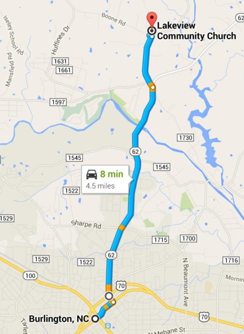

Service Times
Sunday School: 9:45 AM (for all ages)
Sunday Worship: 11:00 AM
Wednesday Night Bible Study: 6:30pm
Location

101 Boone Road Burlington, NC 27217
We are located on the north side of Alamance County. Head north out of Burlington on NC HWY 62 and then take a left onto Union Ridge Road. After you have driven about one mile you will see our church which sits on the corner of Union Ridge Road and Boone Road.
Our Mission
To serve Christ and promote His Kingdom in the local community and throughout the world.